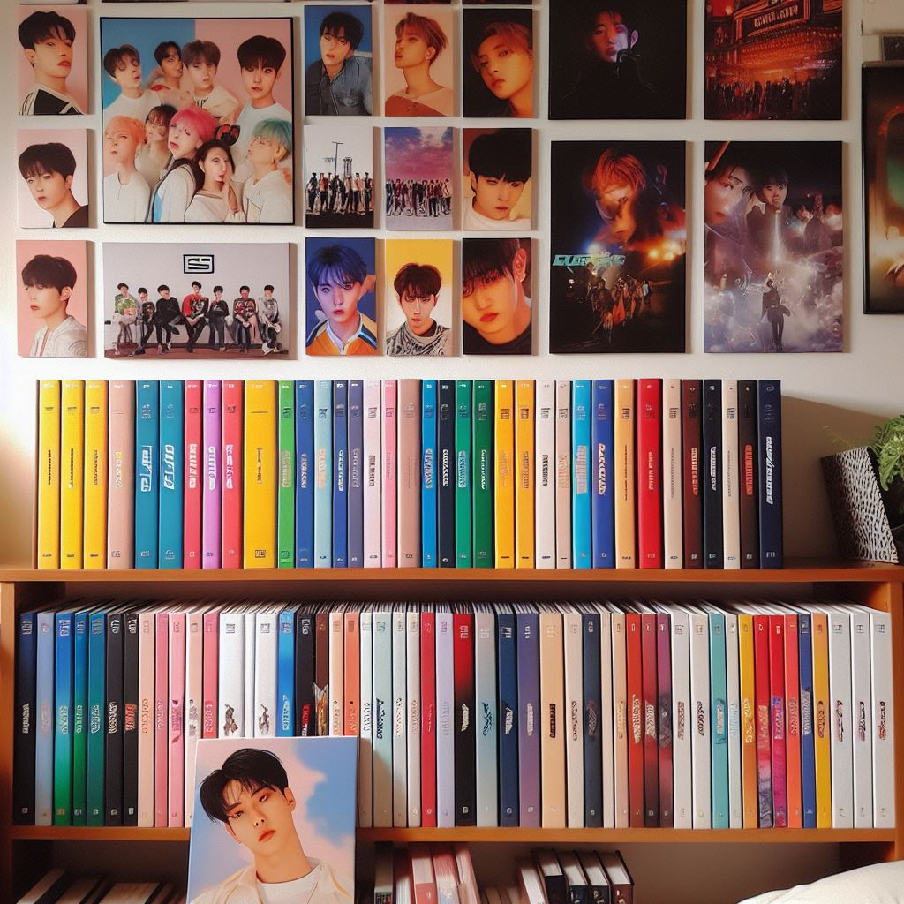
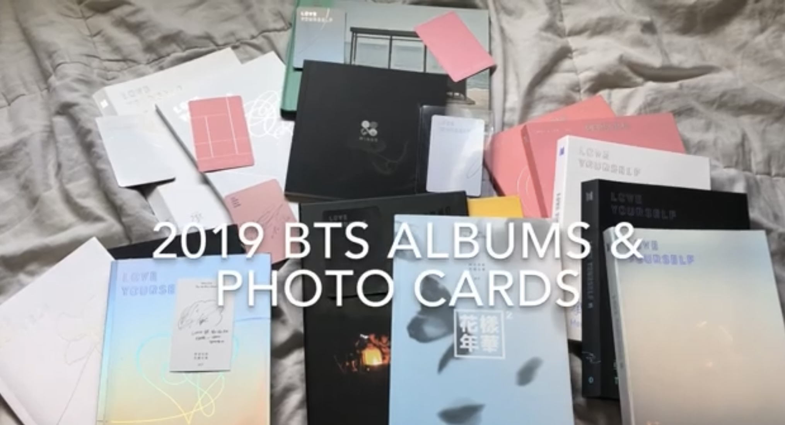
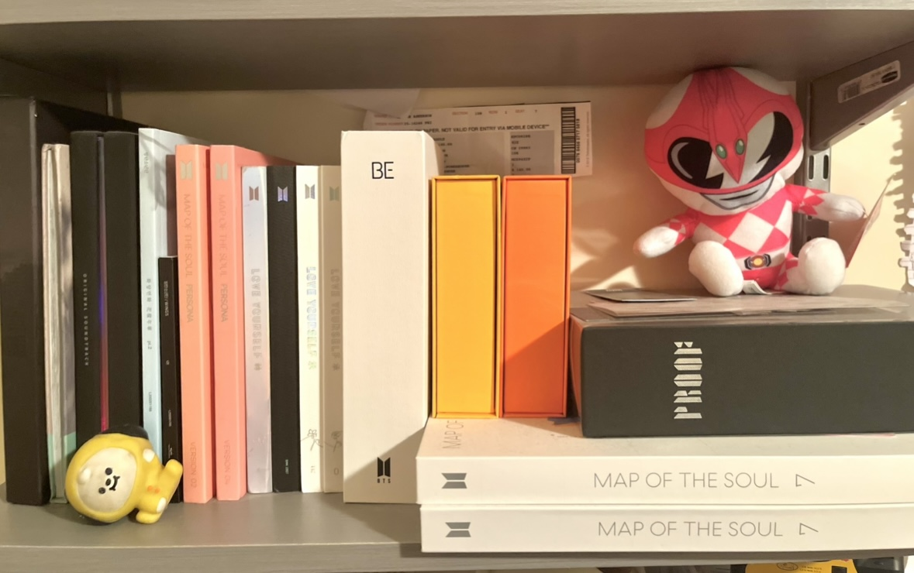

Home
💜
What are BTS albums
💜
About me
💜
When do I buy BTS albums?
💜
Where do I buy BTS albums?
💜
How to start your own collection
💜
Why do I collect BTS albums?
💜
HOME
My hobby is collecting BTS albums! BTS is a korean group that consists of 7 members, Kim Namjoon(RM), Kim Seokjin(JIN), Min Yoongi(SUGA), Jung Hoseok(JHOPE), Park Jimin(JIMIN), Kim Taehyung(V) and Jeon Jungkook(JUNGKOOK).
As artists, they release albums for their fans to listen to their songs. They can rap, sing and dance. Learn more about their albums and hopefully by the end you will start your BTS collection like me!
What
Each BTS album offers a unique listening experience, with songs that has a wide variety of genres including love, youth, self-discovery, and social commentary. Their discography reflects their growth as artists and individuals.
In addition to the music itself, BTS albums are known for their packaging, which includes things like as photocards, a photobook filled with beautiful photoshoots of the members, and a CD containing the album tracks.

This image is an AI image of a kpop boy group with an album collection on wall shelf.
Prompt: Generate an image of a kpop boy group with an album collection on a wall shelf. Curated by Microsoft AI Image generator. Albums are put for display because people like to collect them. Some albums come with posters, which people typically tend to hang the posters up. For example, I have three wall shelf to put all my albums up.

This is some of my BTS album collection. It comes with the CD,photobook and photocards.
About me
Hi! My name is April and I love collecting BTS albums because I am an army (BTS fanbase name)! I put my albums on my wall shelf to display them. The list below are the albums that I have.
- The 3rd mini album
- The 4th mini album
- Young Forever
- Wings
- You never walk alone
- Love Yourself: Her
- Love Yourself: Tear
- Love Yourself: Answer
- Map Of The Soul Persona
- Map Of The Soul 7
- BE
- Butter yellow ver
- Butter orange ver
- Proof
I am holding an army bomb which is a lightstick that lights up whenever BTS performs. I went to the BTS Love Yourself Concert and had an amazing time there!
Are you a BTS army?
When
When do I buy BTS albums? I buy BTS albums whenever it is first released. I became an army in 2017, so I had to buy their previous albums at the kpop store. I also have recieved BTS albums for certain holidays as presents from friends and family.
When 2020-2022 BTS albums were released.
| Map of the soul: 7 |
Dynamite |
BE |
Butter |
BTS, The Best |
Proof |
| February 21, 2020 |
August 21, 2020 |
November 20, 2020 |
May 21,2021 |
June 16, 2021 |
June 10, 2022 |
Prompt: Generate an image of a girl wearing headphones, listening to music while holding a kpop album.
AI image was curated by Microsoft AI Image generator. BTS writes and produces their own songs. If you look at the table, you can see that they release their albums within a few months from one another. This shows their hardwork and dedication in wanting to release a good album that fans and themselves would love.
Where
BTS albums are available for purchase from various retailers, both online and offline. You can find them at physical stores like Target and Walmart, as well as small business K-pop stores specializing in K-pop merchandise. Online options include the official BTS merchandise store, Weverse Shop, along with platforms like Amazon, eBay, and K-pop online stores such as Ktown4U.
An AI image of a worker working at an album store.
This image was curated by Microsoft AI Image generator by looking up "asian girl working at an album music store." The reason why I chose asian girls in my images is to try to resemble me as the fan and worker! KPOP stores are typically rare because the population of kpop fans may be little so people resort to online shopping.
How
How to start your own BTS album collection? In order to start your own album collection, you would have to save up money to purchase an album. Albums prices normally ranges from $20-30. If you are looking to buy albums online, you can search up BTS albums on the choice of online store and choose which albums to buy. If you were to buy it at stores, go to the electronic section and go to the music album row.

I have 17 BTS albums!